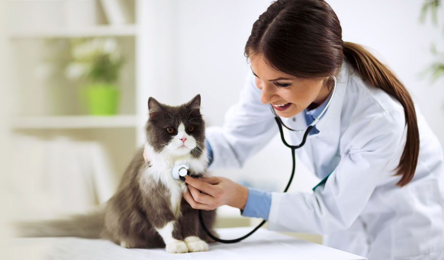
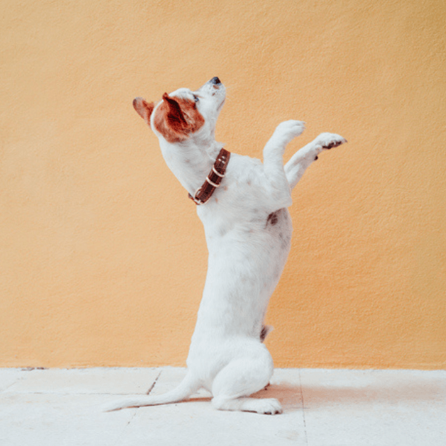

Nossos Serviços
Banho e Tosa para Cães e Gatos
O banho e a tosa são cuidados essenciais para nossos amigos peludos. Para cães e gatos, esses procedimentos vão além da estética, impactando diretamente a saúde e o bem-estar. Confira a dica que separamos para você no vídeo abaixo.
Higiene: Manter a higiene dos nossos animais de estimação é crucial para prevenir doenças de pele e infecções. O banho regular ajuda a remover sujeira, resíduos, pelos soltos e outros detritos do pelo e da pele do animal. Isso é especialmente importante para cães e gatos que passam tempo ao ar livre ou em ambientes sujeitos a sujeira e germes.
Controle de Parasitas: O banho é uma oportunidade para verificar a presença de pulgas, carrapatos e outros parasitas externos. O uso de shampoos e produtos específicos pode ajudar a repelir e eliminar esses parasitas, contribuindo para a saúde geral do animal e a prevenção de infestações.
Bem-Estar e Conforto: Assim como os humanos, os animais também gostam de se sentir limpos e frescos. Um animal que recebe banhos regulares tende a se sentir mais confortável e feliz. Além disso, a tosa adequada, especialmente em raças de pelo longo, ajuda a evitar que os pelos emaranhem, o que pode ser desconfortável e até doloroso para o animal.
Prevenção de Problemas de Pele: Acúmulo de sujeira, oleosidade excessiva e umidade podem levar ao desenvolvimento de problemas de pele, como dermatite e infecções fúngicas. O banho regular ajuda a remover esses fatores de risco e a manter a pele do animal limpa e saudável.
Vínculo entre o Tutor e o Animal: O momento do banho e da tosa também é uma oportunidade valiosa para fortalecer o vínculo entre o tutor e o animal. Muitos animais apreciam a atenção extra durante esses cuidados e associam esses momentos a carinho e afeto.
Veterinária no Ramo de Pet Shop
A integração de serviços veterinários em pet shops tem se tornado cada vez mais comum e importante. Ter uma clínica veterinária dentro de um pet shop oferece uma conveniência significativa para os tutores, permitindo que eles cuidem da saúde de seus animais de estimação enquanto fazem compras para outros produtos essenciais.

Serviços Completos: Pet shops que oferecem serviços veterinários proporcionam um cuidado mais completo, desde check-ups regulares e vacinas até tratamentos de emergência. Isso garante que os animais recebam atenção médica adequada em todas as fases de suas vidas.
Prevenção e Tratamento: Com a presença de veterinários, é mais fácil diagnosticar e tratar doenças precocemente. Além disso, a orientação profissional sobre nutrição, higiene e cuidados preventivos ajuda a manter os animais saudáveis e felizes.
Comodidade para os Tutores: A conveniência de encontrar produtos, acessórios e atendimento médico em um só lugar economiza tempo e esforço para os tutores, tornando a experiência de cuidar dos animais mais prática e eficiente.
Confiança e Relacionamento: A presença de veterinários em pet shops fortalece a confiança dos clientes na loja, criando um relacionamento duradouro. Os tutores sabem que podem contar com profissionais qualificados para cuidar da saúde de seus animais de estimação.
Adestramento para Cães e Gatos
O adestramento é uma parte essencial da vida de cães e, em alguns casos, até de gatos. Ele vai além de ensinar truques: trata-se de melhorar a comunicação entre você e seu pet, promovendo uma convivência harmoniosa e segura.

Melhor Comportamento: Adestrar seu cão ou gato ajuda a corrigir comportamentos indesejados, como mastigar móveis, latir excessivamente ou pular nas pessoas. Com o treinamento adequado, os animais aprendem a seguir comandos básicos e a se comportar de maneira adequada em diferentes situações.
Segurança: O adestramento pode ser vital para a segurança do seu pet. Comandos como "senta", "fica" e "vem" podem evitar que ele se envolva em situações perigosas, como correr para a rua ou se aproximar de outros animais potencialmente agressivos.
Fortalecimento do Vínculo: O processo de adestramento fortalece o vínculo entre o tutor e o animal. Passar tempo juntos e trabalhar em tarefas e comandos ajuda a construir confiança e respeito mútuo. Isso torna a relação mais gratificante e prazerosa para ambos.
Estimulação Mental: O adestramento proporciona uma excelente forma de estimulação mental para os pets. Aprender novos comandos e truques mantém a mente dos animais ativa e engajada, o que é especialmente importante para raças inteligentes que precisam de desafios constantes.
Socialização: Durante o processo de adestramento, os cães, em particular, têm a oportunidade de socializar com outros animais e pessoas. Isso é crucial para desenvolver um comportamento equilibrado e amigável, reduzindo a ansiedade e a agressividade em situações sociais.
Qualidade de Vida: Animais bem treinados geralmente desfrutam de uma melhor qualidade de vida. Eles podem participar de mais atividades, como passeios no parque, viagens e visitas a locais públicos, de maneira tranquila e controlada. Além disso, um pet que entende as expectativas e comandos do tutor tende a ser mais confiante e menos estressado.